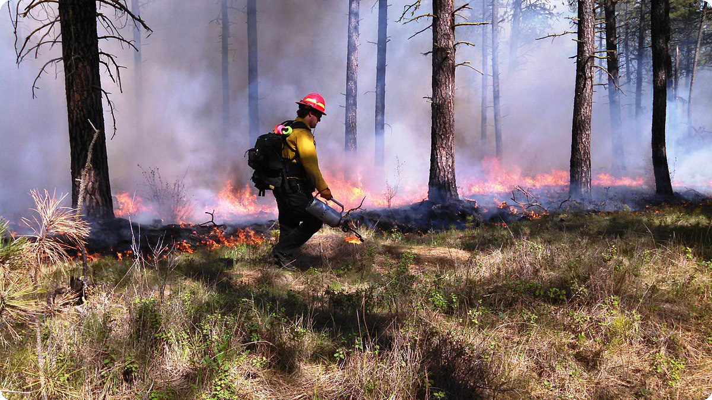

Flare Guard: Real-Time Smoke & Fire Detection with YOLO11


Early fire detection is crucial for minimizing damage and saving lives. Traditional sensors often fail to detect fires quickly, leading to devastating consequences. This project leverages advanced deep learning to enable real-time fire and smoke detection.
Flare Guard is a cutting-edge real-time fire and smoke detection system using YOLOv11 for rapid identification in video streams. The system provides instant alerts via Telegram/WhatsApp and can operate in diverse environments.
This video demonstrates the system detecting fire immediately upon occurrence.
Alerts are sent instantly to Telegram and WhatsApp, including an attached image.
Thanks to multithreading, the system continues running without interruption.
The dataset consists of 9,463 annotated images, available on Roboflow. It includes diverse scenarios to enhance model robustness.
| Split | Images | Annotations |
|---|---|---|
| Training | 9,156 | 27,468 |
| Validation | 872 | 2,616 |
| Test | 435 | 1,305 |
# Download dataset via Roboflow
from roboflow import Roboflow
rf = Roboflow(api_key="YOUR_API_KEY")
project = rf.workspace("sayed-gamall").project("fire-smoke-detection-yolov11")
dataset = project.version(2).download("yolov11")
The model was trained using YOLOv11 on a dataset of fire and smoke images. Training stopped early due to no improvement over 20 epochs, with the best results observed at Epoch 92.
| Metric | Value |
|---|---|
| Precision (P) | 0.806 |
| Recall (R) | 0.717 |
| mAP@50 | 0.770 |
| mAP@50-95 | 0.492 |
git clone https://github.com/sayedgamal99/Real-Time-Smoke-Fire-Detection-YOLO11
cd Real-Time-Smoke-Fire-Detection-YOLO11
Install the required packages:
pip install ultralytics
To perform inference with the trained model on test images, run:
yolo detect predict model=models/best_nano_111.pt source=data/house.png conf=0.35 iou=0.1
To perform inference in real-time using a webcam:
yolo detect predict model=models/best_nano_111.pt source=0 conf=0.35 iou=0.1 show=True